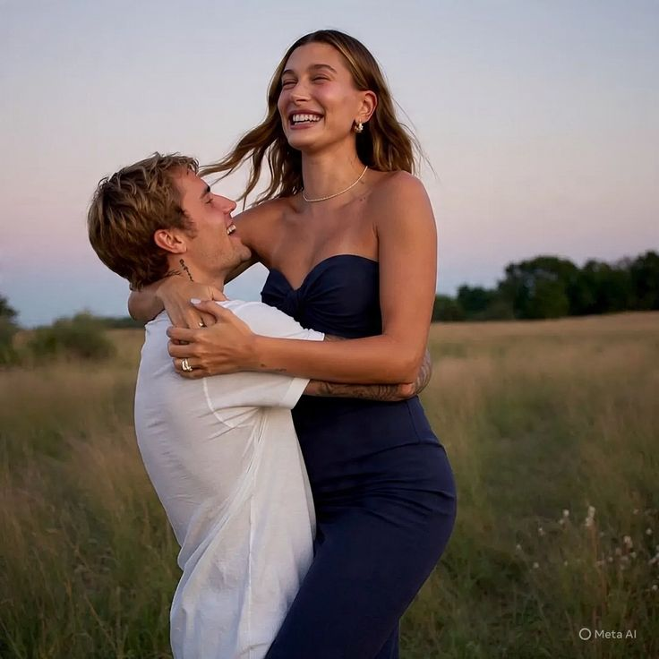

Justin Bieber
• Justin Bieber (1994) é um cantor e compositor canadense de música pop e R&B. Conquistou diversos prêmios,
entre eles o Billboard Music Awards, o American Music Awards, o Brit Award, o Grammy Latino, o MTV Video Music
Awards e o Grammy Awards.
• Em 2006, com 12 anos, participou de uma competição local chamada Stratford Idol, quando os integrantes tiveram aula de canto. Bieber ficou em segundo lugar.
• Após a competição começou a postar o vídeo no YouTube, que foi visto pelo executivo de marketing Scooter Braun, que apresentou Bieber a alguns colegas que trabalhavam com música, entre eles os cantores Usher e Justin Timberlake.
Infância
• Justin Bieber nasceu em London, Canadá, no dia 01 de março de 1994. Filho de Jeremy Jack Bieber e
Pattie Malette, ficou na guarda da mãe após a separação do casal, quando estava com apenas 10 meses de
vida. Com três anos de idade já mostrava aptidão para a música. Ainda criança já cantava na igreja que
frequentava.
Início de carreira
• Em 2008, Justin Bieber iniciou sua carreira quando assinou oficialmente com a Island Records. Em 17 de
novembro de 2009 foi lançado o EP “My World”, que contou com a produção de The Drean e Tricky Stewart.

Casamento
• Justin Bieber namorou a cantora Selena Gomes, e desde 2018 está casado com a modelo Hailey Baldwin.
Clique aqui para ver seus álbuns de estudio
• My World 2.0 (2010)
•Believe (2012)
•Purpose (2015)
•Changes (2020)
•Justice (2021)
•SWAG (2025)
•SWAG II (2025)
Galeria: